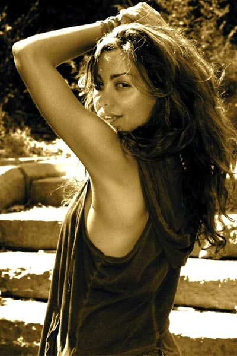
Catherine Chidiac left Beirut at the age of 18 to study art and design at Richmond College in London then worked in a top advertising industry as an art director, a profession she quickly abandoned. "Life is not about competing, but completing" she says.
She then worked for a year as a presenter of LBC TV station but left that job for the same reasons. She went on traveling finding the dots that knit her life. "Ever since I was a child, I've felt the need to travel, discover the world get mixed with other parts of me".
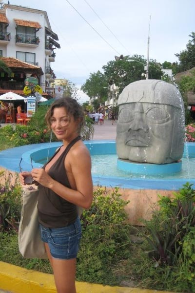
It's at Yoga Works in Los Angeles that Catherine took her first yoga class : "A sense of well being overwhelmed me, even though, I got discouraged by looking at people in headstands and crazy postures that seemed humanly impossible to me".
Catherine Kept on practicing regularly in Beirut until she went for the first time to India in 2008 on an Ayurevedic retreat. "I felt a deep sense of connection with that soil and knew by then that I would come back to spend some time".
Catherine felt that she wanted to share the well being yoga made her feel, and It's in Mexico later on, while improvising a fun class at Puerto Escondido's beach, that she discovered her Dharma in life as a yoga teacher. "The energy flew through me. It wasn't me anymore saying things and leading others into postures: it was yoga".
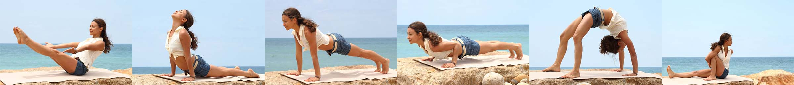
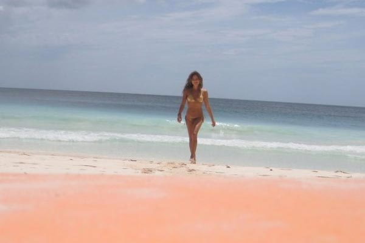
Her next trip took her again to India where she did her teacher training and spent a few month in the Sivananda ashram in Keralla . She went on to Thailand to take Ashtanga workshops with Petri Rasenen and then to New York city where she could confection her teaching technique at Jivamukti school (through a regular practice and many workshops).
Its also in NYC that Catherine learned many other yoga techniques:Tantra Yoga with Shiva Rhea, Restorative with Jillian Pransky, ViniYoga therapy with Gary Kraftsow and many others.
She has been in Beirut for a few years now teaching a Vigorous Vinyasa flow yoga style.
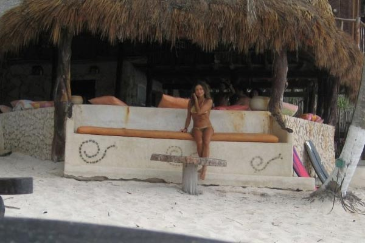
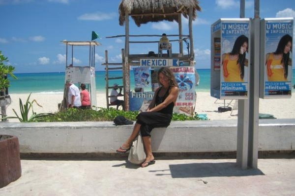
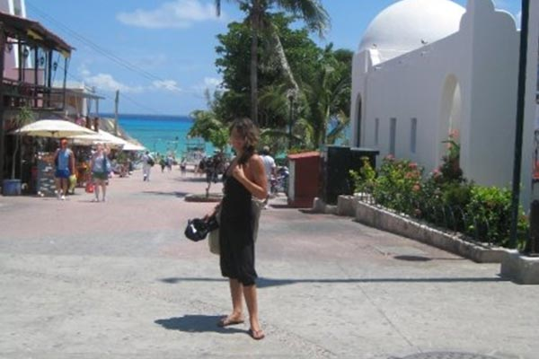
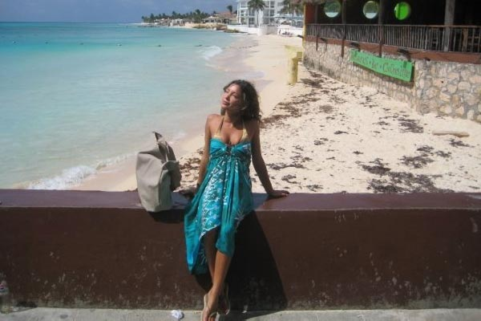
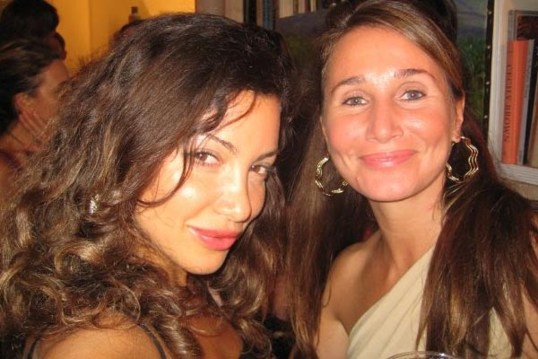
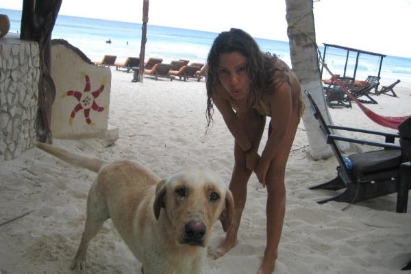
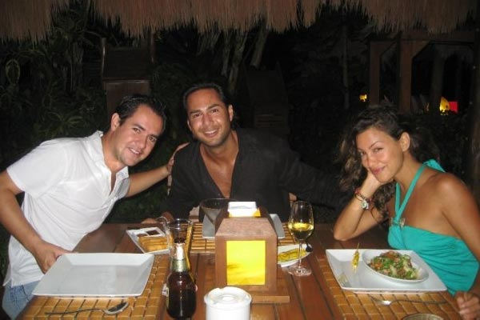
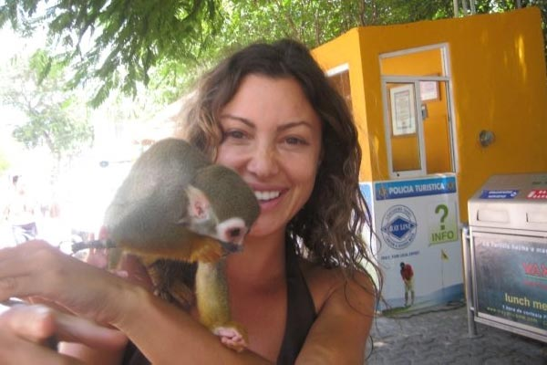